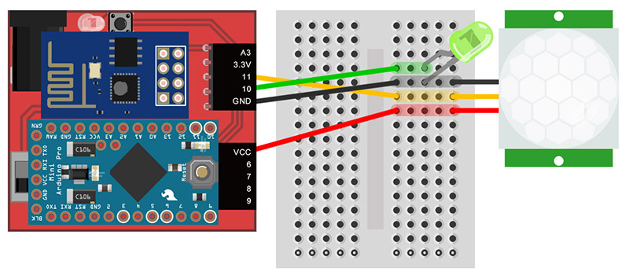
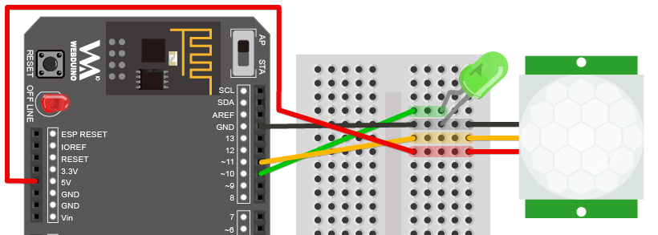
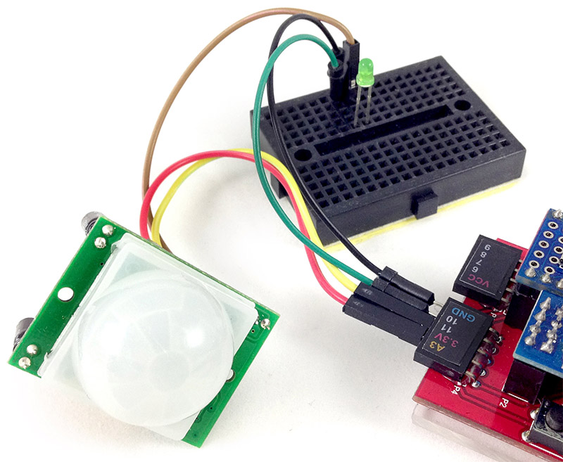
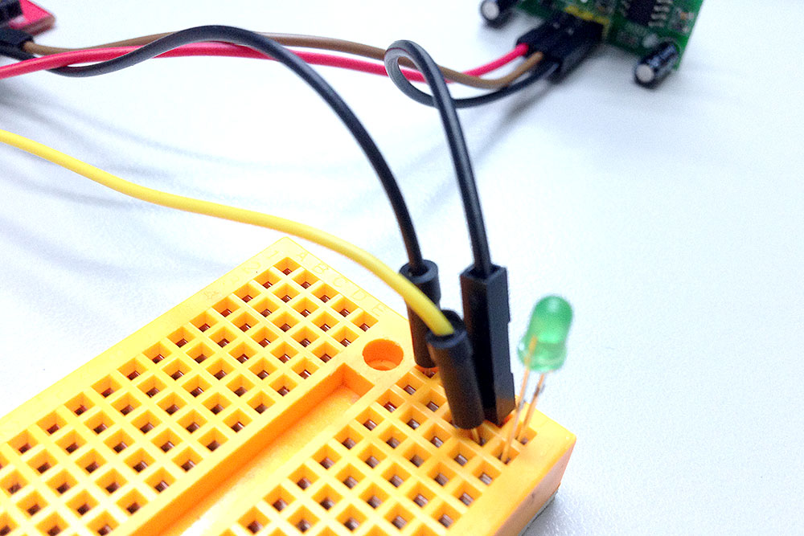
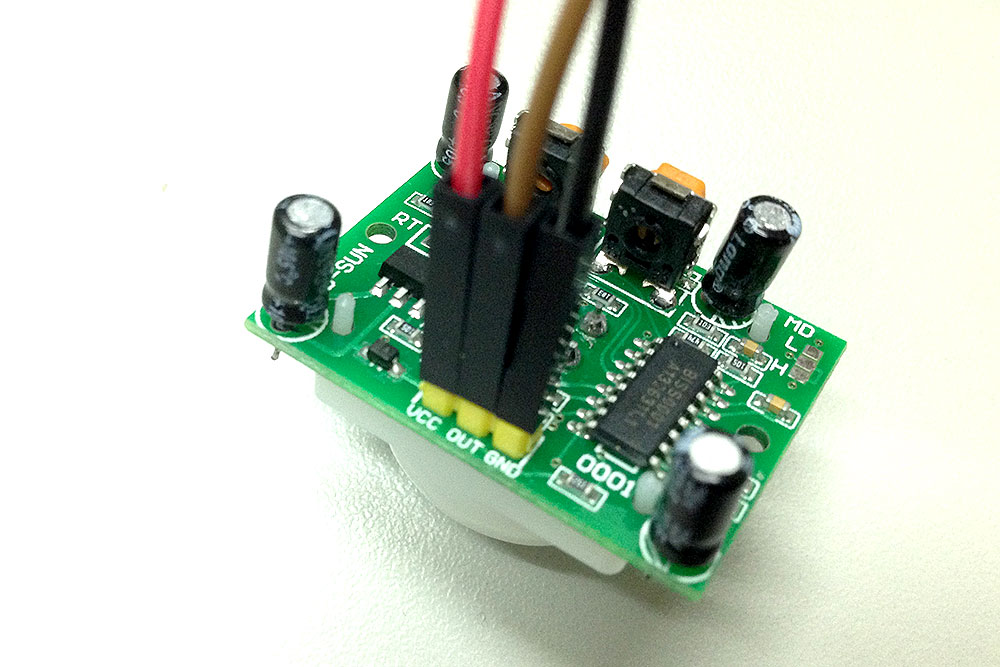
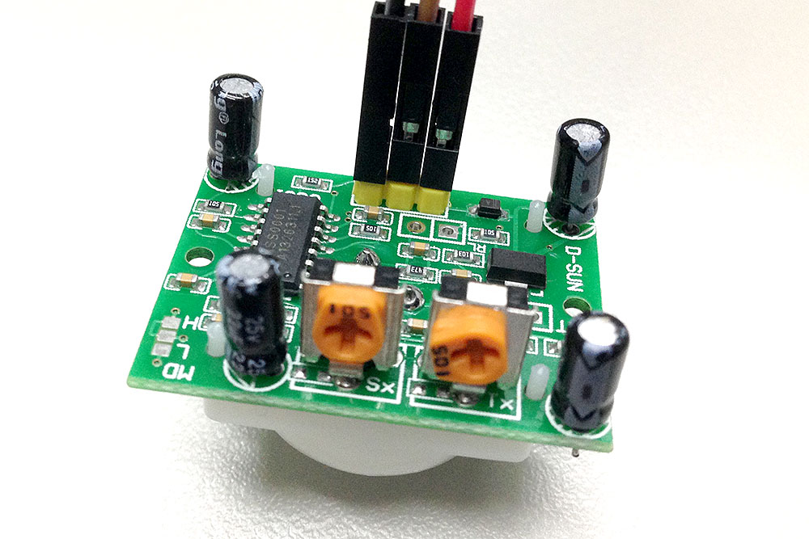
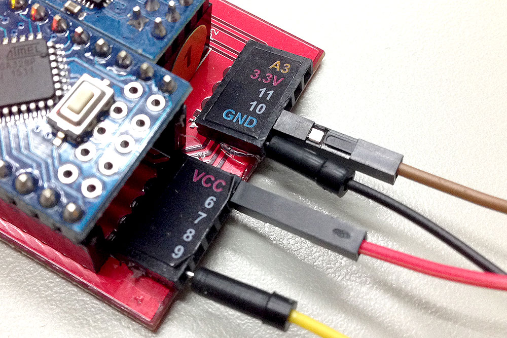
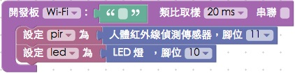

教學範例 15：人體紅外線偵測控制 LED
人體紅外線偵測傳感器 ( PIR ) 可以偵測紅外線的反應變化，當接收到人體發射的紅外線，就會觸發相對應的動作，這個範例利用 Webduino，在人體紅外線傳感器接收到訊號時，觸發網頁的燈泡亮起，同時也讓 LED 燈發光。
範例影片展示
影片對應範例：https://blockly.webduino.io/?page=tutorials/pir-2
接線與實作
我們將人體紅外線偵測傳感器的 VCC 接在 Webduino 開發板 VCC 的位置，GND 接在 GND 的位置，訊號源接在 11 號腳位，LED 燈與人體紅外線偵測傳感器共用 GND，長腳則接在 10 的位置，人體紅外線偵測傳感器上頭有兩顆旋鈕，SX 是靈敏度，TX 是偵測到訊號後延遲的時間，可用十字螺絲起子或用手指進行調整。
馬克一號接線示意圖：

Fly 接線示意圖：

實際接線照片：




Webduino Blockly 操作解析
打開 Webduino Blockly 編輯工具 ( https://blockly.webduino.io )，因為這個範例會用網頁「點擊燈泡」來跟 LED 燈互相搭配，所以要先點選右上方「網頁互動測試」的按鈕，打開內嵌測試的網頁，用下拉選單選擇「點擊燈泡」。

把開發板放到編輯畫面裡，填入對應的 Webduino 開發板名稱，開發板內放入人體紅外線偵測積木，名稱設定為 pir，腳位設定為 11，LED 的積木名稱設定為 led，腳位設定 10。

接著放入「有」偵測到人體紅外線的積木，裡面放入點亮 LED 和燈泡的積木，反之「沒有」偵測到人體紅外線的積木，就是熄滅 LED 燈和燈泡圖案。

完成後，確認開發板上線 ( 點選「檢查連線狀態」查詢 )，點選紅色的執行按鈕，就可以用遮蔽物遮住人體紅外線傳感器，把遮蔽物移開並用手在傳感器前面晃呀晃，就可以看到 LED 燈和燈泡圖片被點亮。( 解答：https://blockly.webduino.io/#-K7AzpcgHb2gua5SK_N8
程式碼解析 ( 完整程式碼、檢查連線狀態 )
HTML 的 header 引入 webduino-all.min.js，目的在讓瀏覽器可以支援 WebComponents 以及 Webduino 所有的元件，如果是用 Blockly 編輯工具產生的程式碼，則要額外引入 webduino-blockly.js。
<script src="https://webduino.io/components/webduino-js/dist/webduino-all.min.js"></script>
<script src="https://webduinoio.github.io/webduino-blockly/webduino-blockly.js"></script>
接著看到 HTML 的 body 裡頭，放入一個 id 為 demo-area-02-light 的圖片區域，裡面含有兩張分別是亮起的燈泡與不亮的燈泡圖片，目的在於點選的時候，圖片也會從不亮的燈泡轉變為亮起的燈泡。
<div id="demo-area-02-light" class="off">
<img src="https://blockly.webduino.io/media/off.png" id="demo-area-02-off">
<img src="https://blockly.webduino.io/media/on.png" id="demo-area-02-on">
</div>
控制燈泡圖片亮暗的是使用 CSS 的方式，用圖片顯示的切換 display:none; 來達到相關效果，下面是 CSS 的程式碼。
#demo-area-02-light img{
height:200px;
display:none;
}
#demo-area-02-light.on #demo-area-02-on{
display:inline-block;
}
#demo-area-02-light.off #demo-area-02-off{
display:inline-block;
}
JavaScript 主要用到兩個人體紅外線偵測的 API：detected、ended，分別表示偵測到紅外線以及結束偵測，內容放上對應的事件即可。
var pir;
var led;
boardReady('', function (board) {
board.samplingInterval = 20;
pir = getPir(board, 11);
led = getLed(board, 10);
pir.on("detected",function(){
led.on();
document.getElementById("demo-area-02-light").className = "on";
});
pir.on("ended",function(){
led.off();
document.getElementById("demo-area-02-light").className = "off";
});
});
以上就是利用人體紅外線偵測傳感器，來偵測有無人體紅外線變化並且點亮 LED 燈。
完整程式碼：http://bin.webduino.io/labu/edit?html,css,js,output
解答：https://blockly.webduino.io/#-K7AzpcgHb2gua5SK_N8
人體紅外線偵測傳感器的延伸教學：
Webduino Blockly 課程 6-1：偵測人體紅外線
如果您還想了解更多，可以參考：
2. Blockly 教學：https://goo.gl/Y8sRkl
3. 產品總覽：https://webduino.io/buy.html
4. 露天賣場：http://goo.gl/0Dj9ip